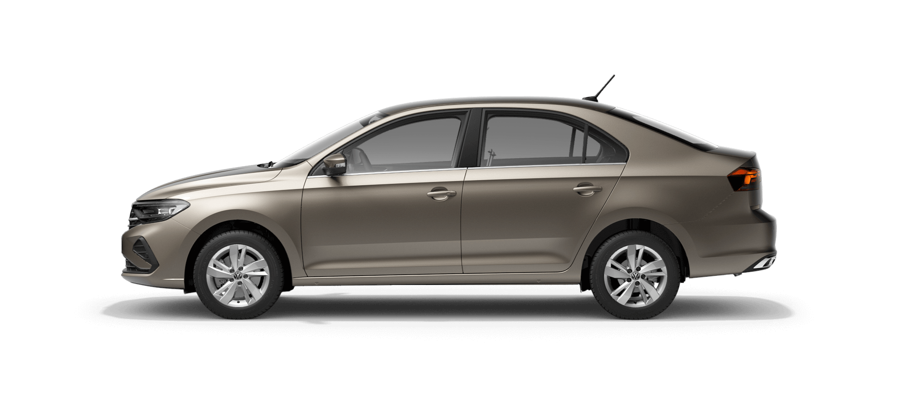

Volkswagen Polo седан — автомобіль B-класу, 4-дверна модифікація Volkswagen Polo 5 в кузові седан німецького концерну Volkswagen. Спроектований в 2009-2010-х роках для ринку Росії та Азії. З 2014 модель під таким же ім'ям продається ринку Малайзії[2]. В Індії ця ж модель продається під ім'ям Volkswagen Vento.[3] У Бразилії, Китаї і ПАР автомобіль носить ім'я Volkswagen Polo Classic. Збірка (по повному циклу) автомобіля, побудованого на платформі хетчбека Polo п'ятого покоління, організована протягом літа 2010 року на власному заводі ТОВ «Фольксваген Груп Рус» в промзоні Грабцево під Калугою. Перші товарні Polo sedan з'явилися у російських офіційних дилерів Volkswagen у вересні 2010 року. Автомобіль технічно ідентичний Škoda Rapid для країн, що розвиваються. З 2011 року Volkswagen Polo sedan офіційно продається в Україні.